HTML 슬라이드가 PPT와 다른 점
HTML(HyperText Markup Language) 슬라이드는 웹 페이지로 만든 발표 자료예요. 첫 화면부터 PPT와 결이 달라요. 왼쪽 위에는 큰 제목과 '발표 시작하기' 버튼이 있고, 왼쪽 가장자리에는 장표 번호가 세로로 늘어서 있어요. 브라우저에서 열리는 페이지라서 마우스에 반응하는 효과를 자유롭게 넣을 수 있어요.
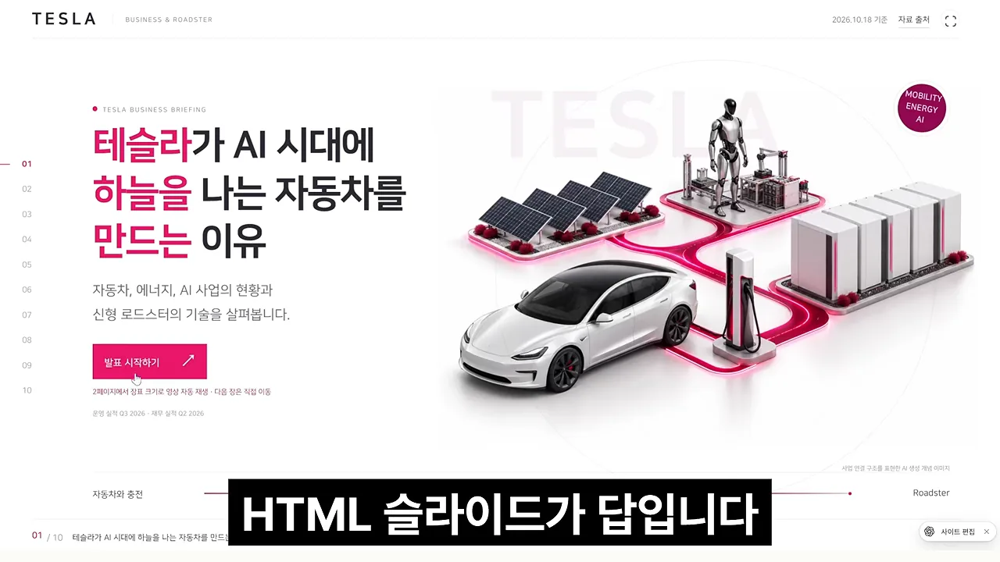
발표자가 꼽는 장점은 이래요. 마우스를 대면 숫자와 그래프가 움직이고, 항목을 누르면 세부 내용이 원하는 자리에서 열려요. 연도를 고르면 같은 화면에서 수치만 바뀌고, 레버를 움직이면 관련 내용이 나타나요. 글자는 슬라이드 안에서 바로 고칠 수 있고 모션 그래픽 영상도 넣을 수 있어요. 폰트 깨질 걱정 없이 어디서든 열려서 발표뿐 아니라 클라이언트 미팅이나 견적 상담에도 쓰기 좋다고 해요.
만드는 과정은 세 단계로 정리돼요. 화면 아래 동그라미 번호를 보면 ① 초안, ② 수정, ③ 모션그래픽 순서예요. ChatGPT와 Claude 어느 쪽에서 해도 순서와 프롬프트는 같고, 두 앱의 세팅과 버튼 위치만 조금 달라요.
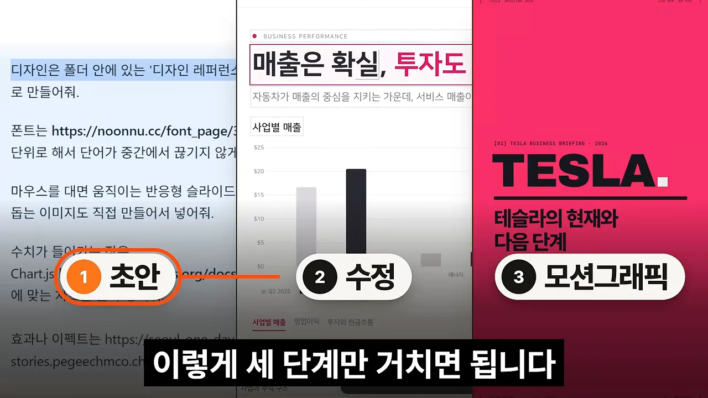
시작 전 세팅: 폴더 하나와 데스크톱 앱
세팅은 세 가지예요. 모든 작업이 폴더 하나를 중심으로 돌아가요. 자료를 넣는 곳도, AI(Artificial Intelligence)가 결과를 저장하는 곳도 이 폴더예요. 영상 여러 군데에 흩어진 흐름을 한 장으로 모으면 이래요.
폴더에 자료와 디자인 레퍼런스 넣기
먼저 PC(Personal Computer)에 폴더를 하나 만들고 발표 자료를 넣어요. PDF, 워드, 엑셀 모두 되고, 한 개든 여러 개든 괜찮아요. 아래 화면에는 테슬라 재무 분석 PDF, 로드스터 보고서 워드 파일, 3년치 재무제표 엑셀이 들어 있어요. 맨 아래 빨간 테두리가 이번에 추가한 '디자인 레퍼런스.jpg'예요. 발표자는 핀터레스트에서 'PPT'로 검색해 마음에 드는 이미지를 받고, 파일 이름을 이렇게 바꿨어요.
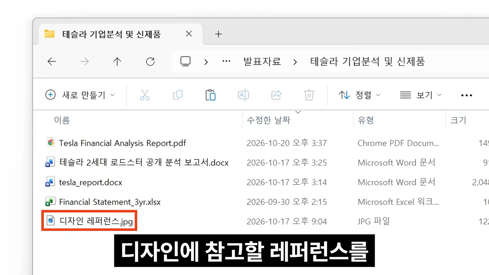
ChatGPT 데스크톱 앱 세팅
ChatGPT 데스크톱 앱을 설치해 열고 위쪽에서 Work로 들어가요. 입력창 오른쪽 아래의 추론 수준 선택을 누르면 모델과 수준을 고를 수 있어요. 빨간 테두리처럼 GPT-6.1 Sol에 High로 맞춰요.
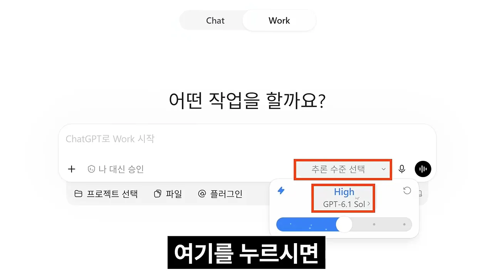
이어서 '프로젝트 선택 → 새 프로젝트'로 프로젝트를 만들고, 폴더 추가로 앞의 폴더를 연결해요. 마지막으로 플러그인 메뉴에서 Sites를 켜요. 켜고 나면 입력창 위에 Sites 표시가 붙고, 아래쪽에는 연결한 폴더 이름 '테슬라 기업분석 및 신제품'이 보여요.
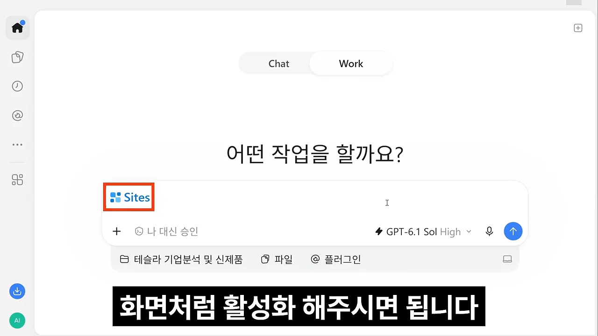
Claude 데스크톱 앱 세팅
Claude는 더 간단해요. 데스크톱 앱을 설치해 열고 입력창 오른쪽 아래 모델 메뉴에서 Opus 5.5를 고르고, 그 아래 '노력'을 '높음'으로 둬요. 그다음 '프로젝트 또는 폴더 → 폴더 추가'로 같은 폴더를 연결하면 끝이에요.
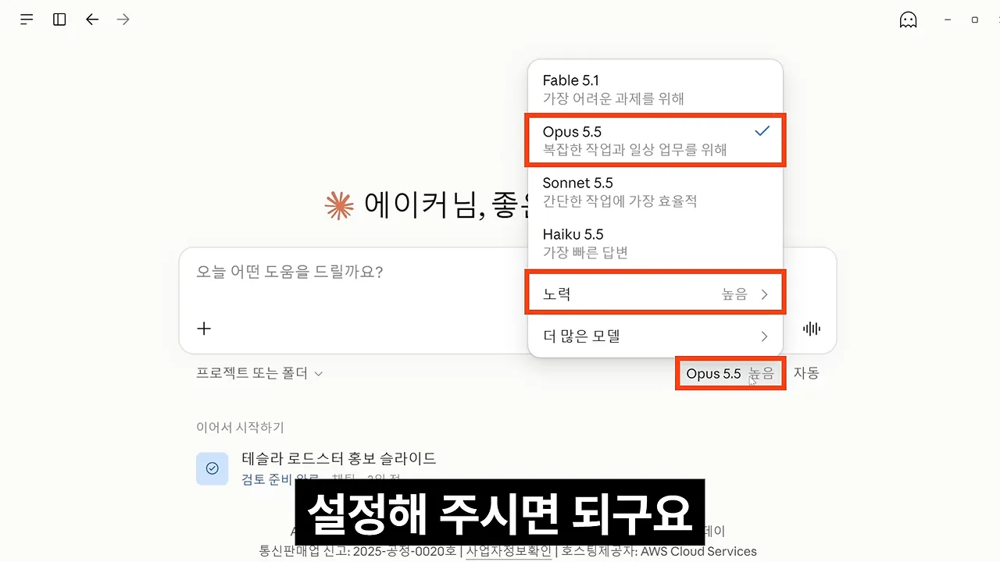
1단계 초안: 마스터 프롬프트의 괄호 세 칸
마스터 프롬프트는 영상 설명란과 고정 댓글에 있어요. 수정용, 모션 그래픽용 예시 프롬프트와 레퍼런스 사이트도 같이 정리돼 있다고 해요. 프롬프트를 복사해 앞에서 세팅한 ChatGPT나 Claude에 붙여 넣고, 대괄호로 표시된 세 칸만 채우면 돼요.
화면에 보이는 앞부분을 보면 대괄호가 [주제], [5~10장], [눈누 폰트 주소] 세 군데예요. 나머지 문장은 그대로 둬요. 폴더의 '디자인 레퍼런스'를 쓰라는 지시, 단어가 중간에서 끊기지 않게 줄바꿈하라는 지시, 마우스에 반응하는 HTML로 만들고 이해를 돕는 이미지도 직접 만들어 넣으라는 지시가 이미 들어 있어요.
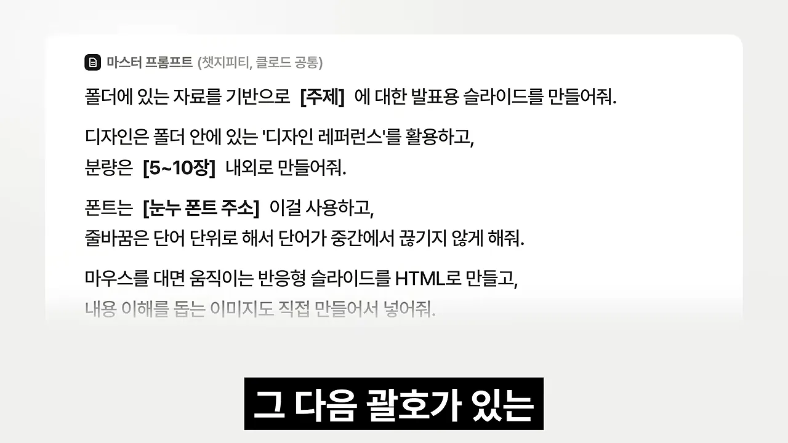
| 괄호 | 영상의 예시 | 발표자의 조언 |
|---|---|---|
| 주제 | 테슬라의 사업 현황과 계획, 그리고 새로 나온 로드스터 | 발표 목적, 청중의 정보, 발표 장소 같은 맥락까지 자세히 적을수록 잘 맞는 슬라이드가 나와요 |
| 분량 | 5~10장 | 나중에 장표 추가나 사이드 페이지로 늘릴 수 있으니 대략 이 정도로 시작해요 |
| 폰트 주소 | https://noonnu.cc/font_page/34 | 가장 중요한 칸이에요. 폰트만 깔끔해도 발표의 완성도가 크게 올라가요 |
폰트는 눈누라는 무료 폰트 사이트에서 골라요. 무료 폰트 목록에서 허용 범위를 정하면 쓸 수 있는 폰트만 추려져요. 마음에 드는 폰트를 눌러 그 페이지 주소를 복사하고, 세 번째 괄호에 넣어요. 아래 화면의 빨간 칸이 그 자리이고, 바로 아래 'https://noonnu.cc/font_page/34'가 복사한 주소예요.
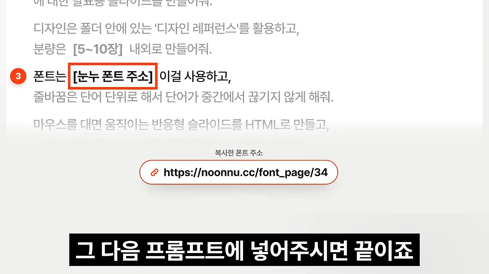
2단계 수정 ①: 내용 고치기와 편집 모드
초안이 나와도 끝이 아니에요. 두 번째 단계인 결과물 수정은 둘로 나뉘어요. 아래 화면에서 왼쪽 ① 내용 수정에는 '구성'과 '문구' 꼬리표가, 오른쪽 ② 효과 추가에는 '시각적 퀄리티' 꼬리표가 붙어 있어요. 장표 구성과 문구를 먼저 다듬고, 그다음 효과로 보기 좋게 만드는 순서예요.
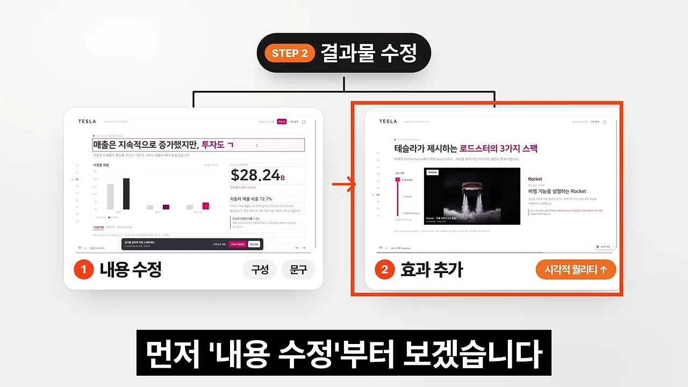
프롬프트로 구성부터 잡기
내용은 전체 장표부터 보고 개별 문구로 내려가는 게 편해요. 초안을 만든 대화창에 이어서 한 줄씩 요청하면 돼요. 영상이 보여 준 요청은 이 네 가지예요.
| 하고 싶은 것 | 영상의 예시 프롬프트 |
|---|---|
| 글자 크기 조정 | 전체 텍스트를 지금보다 조금 더 키워줘 |
| 장표 추가 | 2페이지와 3페이지 사이에 최근 3년 동안의 매출과 차량 생산 개수를 조사해서 추가해줘 |
| 장표 삭제 | 중간에 4페이지는 삭제해줘 |
| 순서 변경 | 2페이지와 3페이지의 순서를 서로 바꿔줘 |
장표를 추가할 때는 어느 자리에 어떤 내용이 필요한지를 적는 게 요령이에요. 위 요청으로 생긴 장표가 아래 화면이에요. 제목은 '최근 3년의 매출과 차량 생산 추이'이고, 2023·2024·2025 버튼 아래에 연간 매출과 연간 차량 생산량 막대그래프가 나란히 있어요.
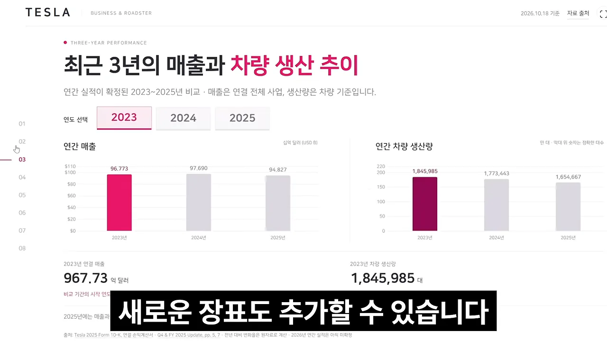
문구가 많으면 편집 모드
구성이 잡히면 페이지마다 읽으며 문구를 고쳐요. 그런데 고칠 곳이 많으면 매번 프롬프트를 쓰기 번거로워요. 이때 "글자를 직접 클릭해서 수정할 수 있는 편집 모드를 넣어 줘"라고 요청해요. 그러면 ChatGPT와 Claude 모두 화면 위에 편집 버튼을 달아 줘요. 아래 화면 왼쪽(ChatGPT)은 '글자 편집', 오른쪽(Claude)은 '편집'이라는 이름이에요.
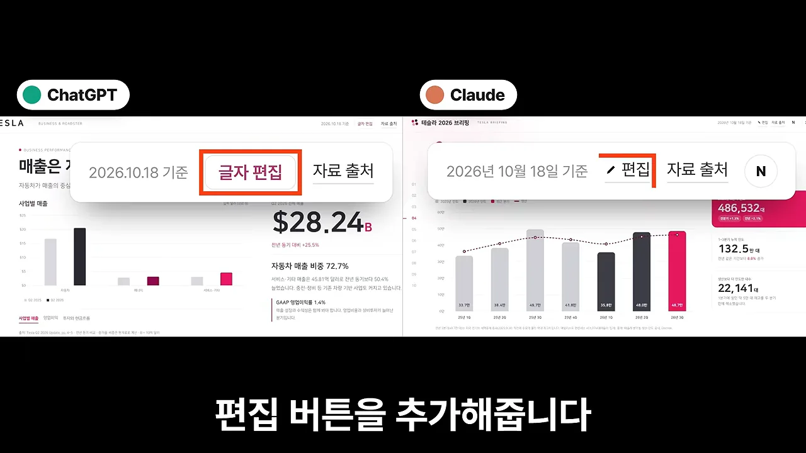
버튼을 누르고 원하는 글자를 클릭하면 바로 고칠 수 있어요. 다 고치면 저장을 누르고 '편집 완료'나 '끝내기'를 눌러요. 그다음 "앞서 설정한 편집 모드를 해제해 줘. 수정한 텍스트는 모두 그대로 저장해 줘"라고 요청하면 편집 버튼이 사라져요. 발표 중에 버튼이 보이지 않게 하려는 거예요. 또 고칠 일이 생기면 편집 모드를 다시 넣어 달라고 하면 돼요.
2단계 수정 ②: 시선을 잡는 효과 세 가지
발표자가 HTML 슬라이드의 핵심이라고 부르는 부분이에요. 프롬프트는 짧지만 시선을 잡는 효과 세 가지를 보여 줘요. 셋 다 요청 문장에 들어가야 할 요소가 정해져 있어서, 먼저 표로 모아 둘게요.
| 효과 | 어떻게 움직이나요 | 요청에 적을 것 | 잘 맞는 자리 |
|---|---|---|---|
| 채우기 효과 | 마우스를 대면 숫자가 올라가고 그래프가 차올라요 | 한 줄이면 돼요 | 기업 성과, 재무 상태 같은 수치 강조 |
| 연동 효과 | 화면은 그대로, 고른 사양이나 연도에 맞춰 세부 내용만 바뀌어요 | 어느 페이지에서 · 무엇을 고르면 · 어떤 내용이 바뀌는지 | 고객 견적 상담, 클라이언트 미팅 |
| 사이드 페이지 | 항목을 누르면 세부 내용이 패널이나 팝업으로 열려요 | 어디를 누르면 · 무슨 내용이 · 어느 방향에서 | 자료나 분량이 많을 때 |
① 채우기 효과
요청은 "숫자랑 그래프에 마우스를 대면 자동으로 채워지는 효과를 추가해 줘" 한 줄이에요. 아래 화면은 이 효과를 넣은 애플 실적 슬라이드예요. 왼쪽 막대그래프에 마우스를 올린 자리에 작은 수치 상자가 떠 있고, 오른쪽 노란 카드에는 391.0과 31.5%가 크게 나와요.
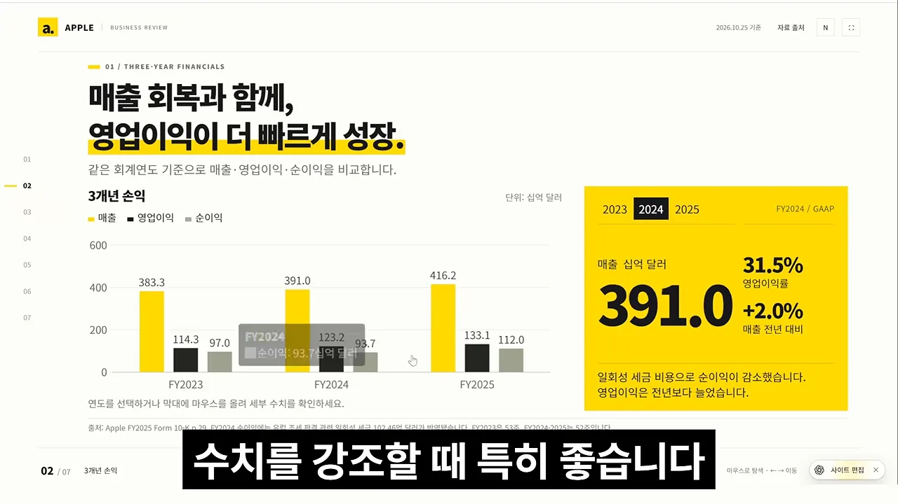
② 연동 효과
특정 사양이나 연도를 고르면 화면 틀은 그대로 두고 세부 내용만 바뀌는 효과예요. 예시는 로드스터의 세 사양이에요. 아래 프롬프트에서 빨간 꼬리표 세 개가 요청의 뼈대를 짚어 줘요. ① 어느 페이지에, ② 무엇을 선택하면, ③ 어떤 내용이 연동되는지예요.
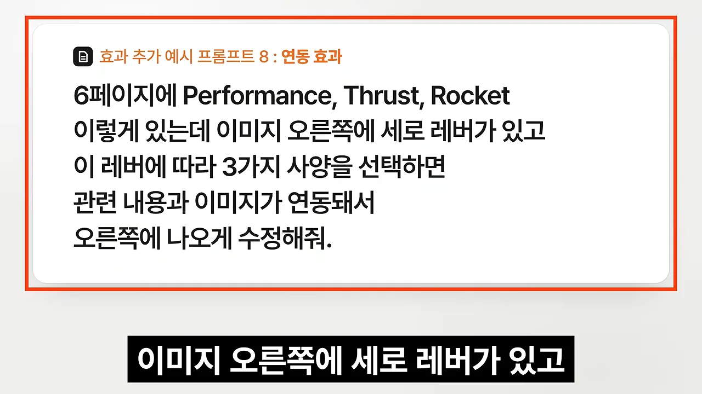
결과 화면의 이미지 오른쪽에 세로 레버가 생겼어요. 레버를 맨 위 Rocket에 두자 오른쪽 설명이 '비행 기능을 설명하는 Rocket'으로 바뀌었어요. 슬라이드를 여러 장 넘기지 않고 한 화면에서 원하는 내용만 보여 줄 수 있어요.
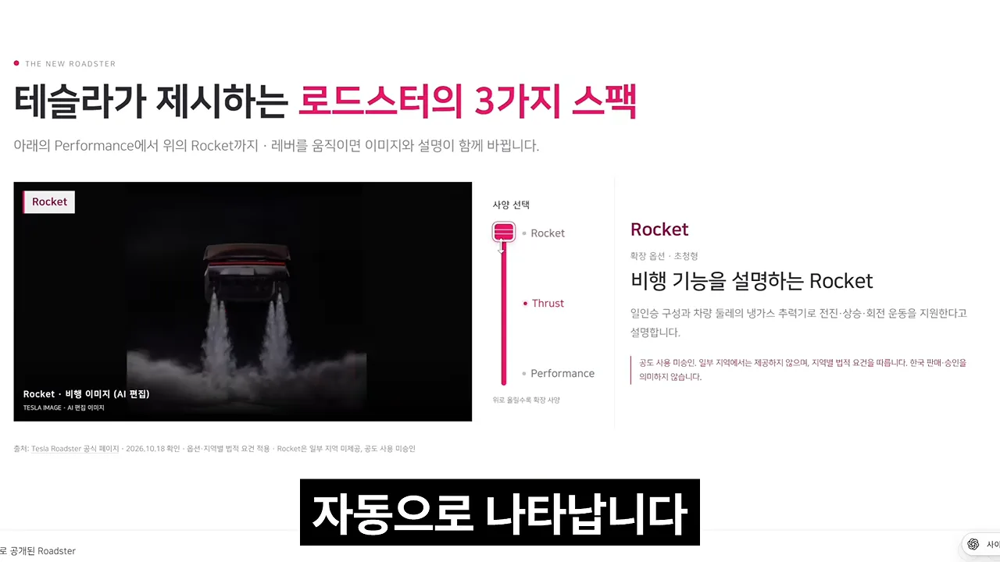
같은 방식을 연도에도 쓸 수 있어요. "3페이지에 2023, 2024, 2025 연도가 있는데 연도를 누르면 매출과 차량 생산량뿐 아니라 주요 재무 수치가 연동돼서 그래프로 나오게 해 줘"라고 요청했어요. 화면에서 2024를 누르자 연간 매출, 차량 생산량 막대 중 2024년 것이 강조되고, 오른쪽에 '2024년 수익성' 가로 막대가 새로 나와요.
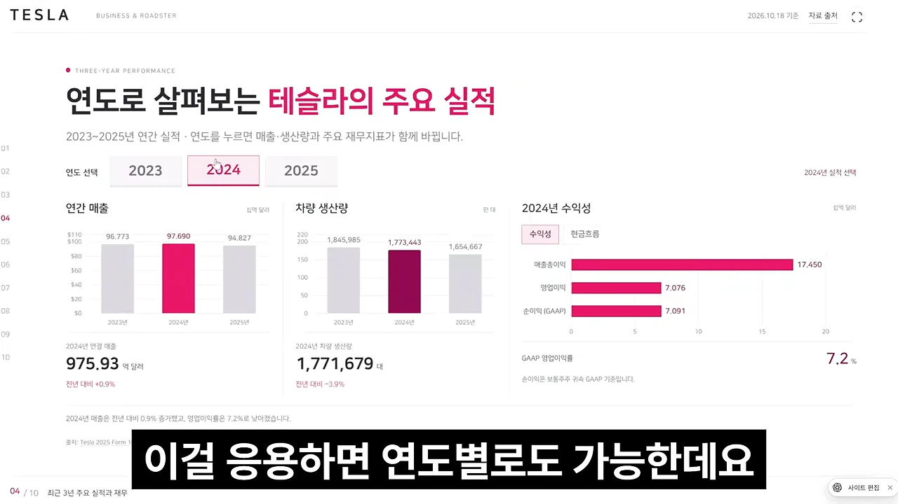
③ 사이드 페이지
내용을 누르면 세부 항목이 열리는 기능이에요. PPT라면 사업별 세부 내용을 보여 주려고 화면을 넘겨야 하지만, HTML 슬라이드는 사이드 페이지만 붙이면 돼요. 요청 프롬프트는 '어디를 누르면'(5페이지의 사이버캡 생산, 로봇 택시 서비스 확대), '어느 방향에서'(아래에서 사이드 바가 올라와서), '무슨 내용이'(관련된 세부 내용)를 다 담고 있어요. 주변을 어둡게 하고 흐림 효과는 넣지 말라는 모양 지시도 붙였어요.
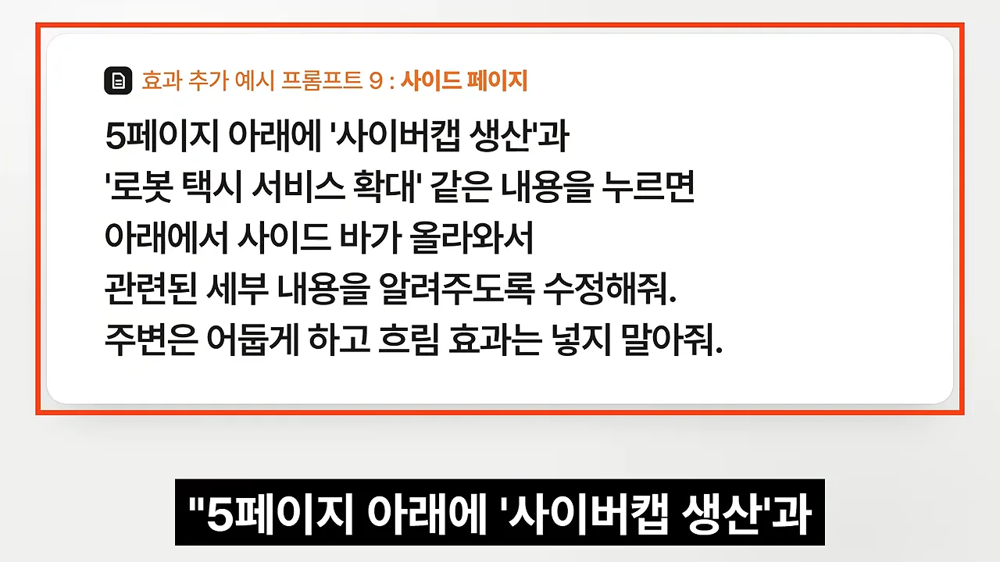
패널은 위아래 좌우는 물론 가운데 팝업으로도 띄울 수 있어요. 아래는 가운데 팝업으로 연 예시예요. 뒤 화면은 어둡게 깔리고, 팝업에는 '로보택시 확장 속도' 제목 아래 148만, 1개 도시, 240만 마일, 300대+ 같은 숫자 카드가 모여 있어요.
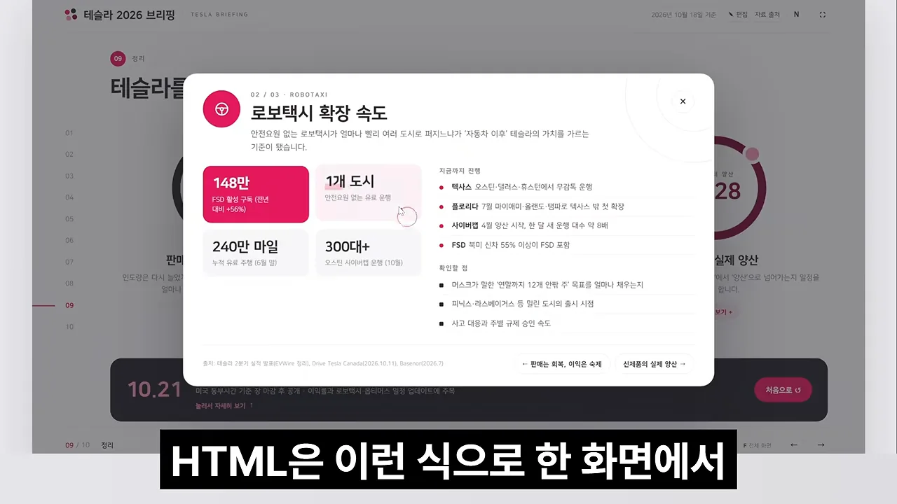
발표자는 그래서 모든 장표를 한 번에 만들기보다 주요 챕터만 만들고 세부는 사이드 페이지로 붙이라고 권해요.
PPT처럼 하나씩 나타나게 하기
PPT의 애니메이션처럼 클릭이나 엔터를 누를 때마다 요소가 나타나게 할 수도 있어요. 아래 프롬프트처럼 '빈 화면에서 시작하고, 클릭하거나 엔터를 칠 때마다 요소들이 순서대로 나오게'라고 적으면 돼요. "발표 시작하기를 누르면 자동 발표가 진행되도록 바꿔 줘"라고 하면 처음부터 자동으로 넘어가요.
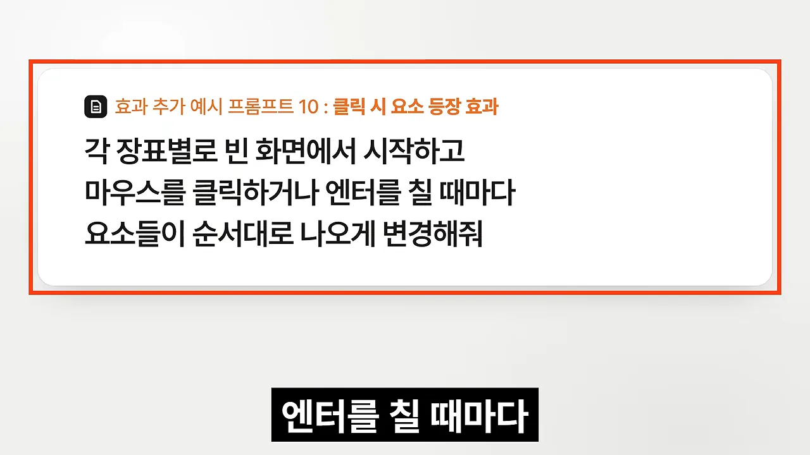
3단계: 레퍼런스로 모션 그래픽 만들기
마지막 단계는 모션 그래픽이에요. 발표자는 이걸 'AI가 코드로 만드는 동영상'이라고 설명해요. 글자와 그래픽이 역동적으로 움직이는 짧은 영상이고, 완성하면 슬라이드 안에 바로 넣을 수 있어요. 아래가 완성된 모습이에요. '15초 영상으로 만나는 테슬라'라는 장표 가운데에 테슬라 로고가 나오는 영상 플레이어가 들어 있어요.
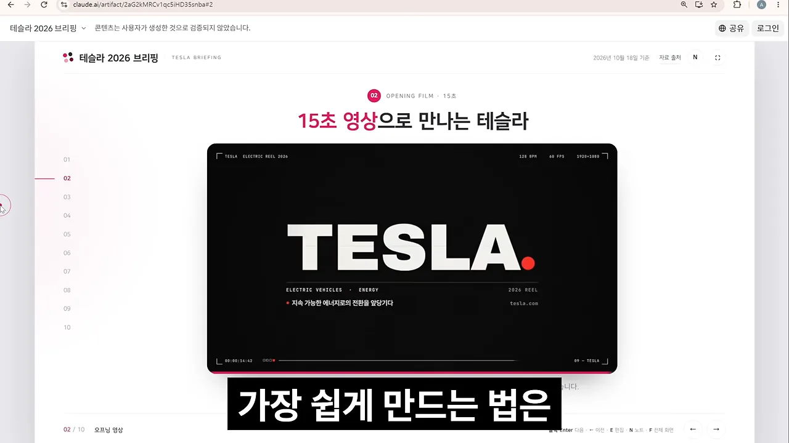
레퍼런스 영상 고르기
여러 방법 중 가장 쉬운 건 좋은 영상을 보여 주고 "이거 참고해서 만들어 줘"라고 하는 거예요. 발표자는 '백 번 듣는 것보다 한 번 보는 게 낫다'는 속담을 빌려 설명해요. 레퍼런스 사이트 주소는 설명란과 고정 댓글에 있어요. 화면에 나온 곳은 JasonZhu.AI의 프롬프트 라이브러리예요. 위쪽 필터에서 'Motion graphics'를 고르면 아래에 모션 그래픽 예시 영상 카드가 늘어서요.
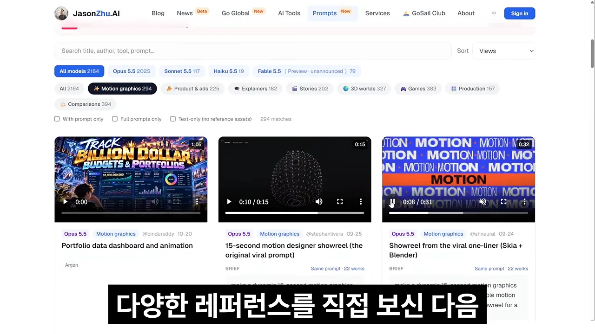
받은 영상은 앞에서 만든 폴더에 넣고 이름을 '모션 그래픽 레퍼런스'로 바꿔요. 아래 탐색기 맨 아래 빨간 칸이 '모션 그래픽 레퍼런스.mp4'예요. 발표 자료, 디자인 레퍼런스와 같은 폴더에 있어서 AI가 바로 찾을 수 있어요.
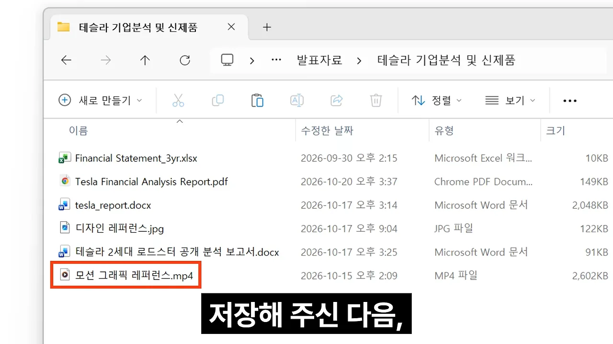
영상 만들고 슬라이드에 넣기
작업하던 대화창에서 요청해요. 프롬프트에는 참고할 파일(폴더 속 '모션그래픽 레퍼런스' 영상), 내용(슬라이드 내용 요약), 길이(15초), 분위기(최대한 역동적으로)가 들어 있어요. 주제와 길이를 주고 역동적으로 만들어 달라는 게 요점이에요.
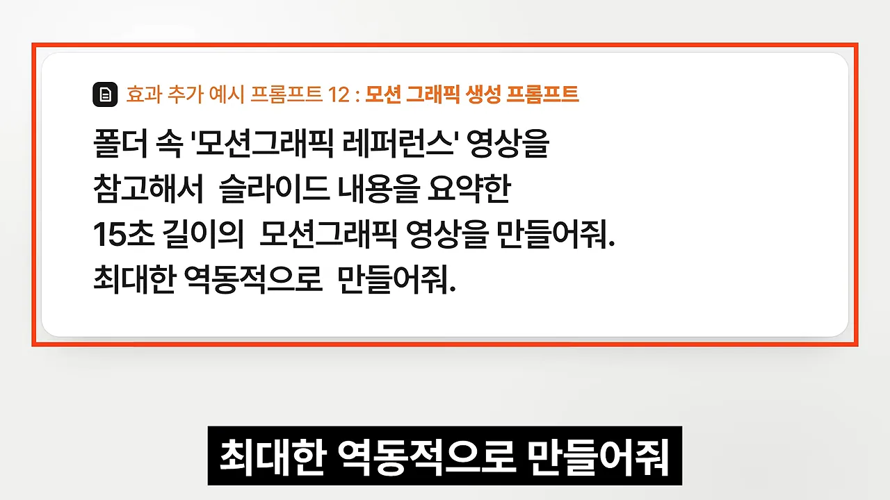
잠시 기다리면 mp4 파일이 나와요. 미리보기 화면은 반으로 갈려 있어요. 왼쪽 검은 면에는 '282.4억 달러, 2분기 매출·사상 최대'가, 오른쪽 빨간 면에는 '1.4%, 판매는 회복'이 큰 숫자로 나와요. 슬라이드에 있던 실적 숫자를 영상용으로 다시 짠 거예요.
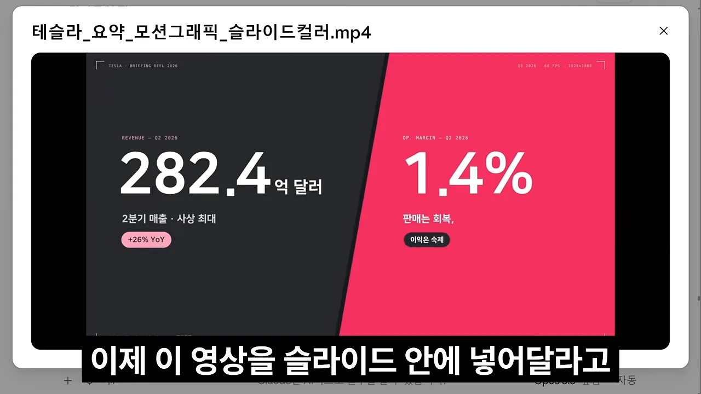
이 영상을 슬라이드에 넣을 때도 어디에 어떻게 넣을지만 말해요. 영상의 예시는 "방금 만든 영상을 넣어 마지막 페이지를 추가해 줘. '테슬라, 가능성을 움직이다'를 이 마지막 페이지의 제목으로 해 줘"예요.
모션 그래픽 프롬프트 뒤에 "쇼츠용으로 만들어 줘"만 붙이면 휴대폰에 맞는 세로 영상이 나와요. 아래는 서울 여행 슬라이드에 넣은 예시예요. 오른쪽에 'SEOUL METRO'라는 세로 영상이 장표 한쪽을 차지하고, 왼쪽에는 '서울에서 해보고 싶은 한 가지를 골라보세요' 문구와 선택지 네 개가 있어요.
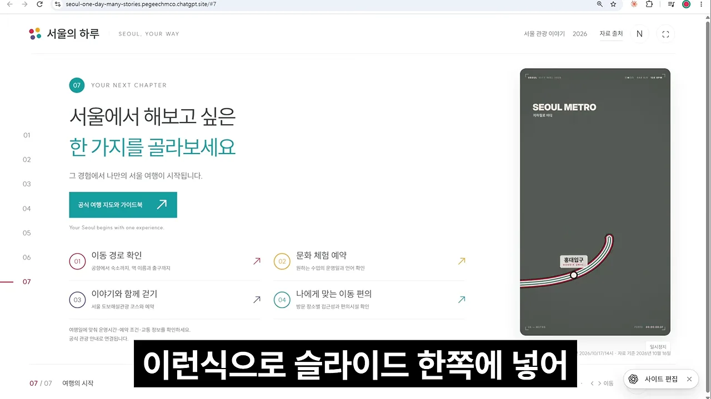
쓰는 법, 두 AI 비교, 주의할 점
파일로 열기, 링크로 공유하기
완성한 슬라이드를 쓰는 방법은 두 가지예요. 기본은 파일을 크롬으로 여는 거예요. 처음 연결한 폴더에 가 보면 HTML 파일이 저장돼 있어요. 아래 화면에서는 outputs 폴더 안의 '테슬라_사업현황과_로드스터_7장.html'이 그 파일이에요. 더블 클릭해서 크롬으로 열면 돼요. 화면 아래에는 'PC에 크롬 설치 필요'라는 안내도 붙어 있어요.
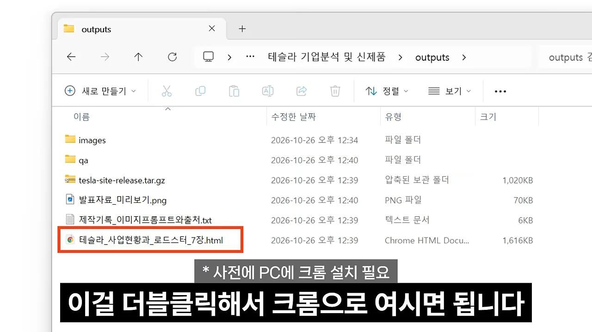
두 번째는 인터넷 주소로 여는 방법이에요. ChatGPT는 공유 창의 '링크 접근 권한'을 '공개'로 바꾸고 '링크 복사'를 눌러요. 그러면 주소만 있으면 누구나 슬라이드를 열어 볼 수 있어요.
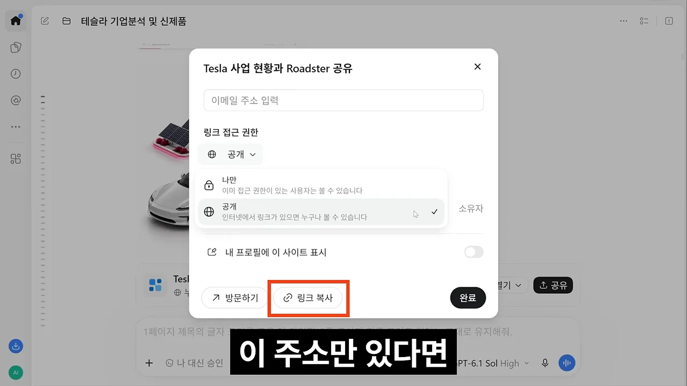
Claude는 공유 창의 '일반 액세스'를 '링크가 있는 모든 사용자'로 바꿔요. 공유 화면이 보이지 않으면 "아티팩트로 결과물을 열어 줘"라고 요청하면 돼요.
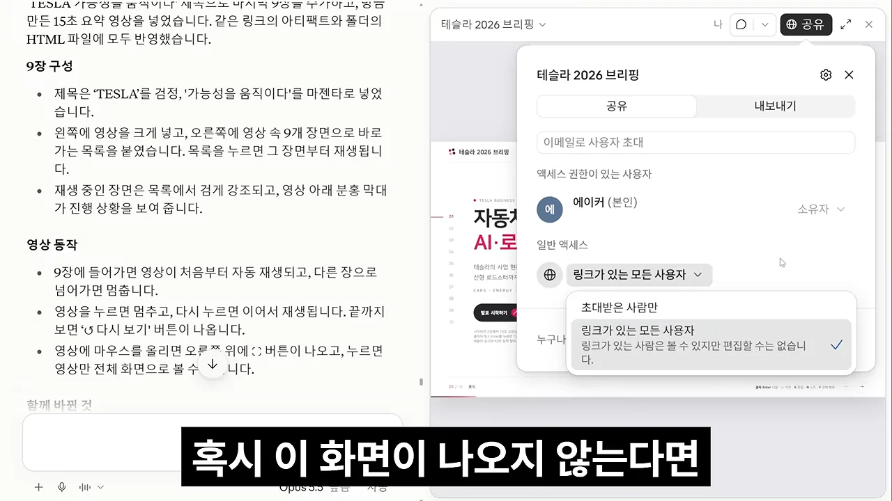
막히면 AI에게 원인부터 물어보기
완성한 슬라이드의 움직임이 느리거나 어색하면 AI에게 해결 방법을 물어보면 돼요. 영상에서는 "사이드바와 팝업을 열면 애니메이션이 느려지고 버벅거리는데, PC 문제인지 네가 해결할 수 있는지 답부터 해 줘. 작업은 아직 하지 말고"라고 물었어요. AI는 PC보다 코드 탓이 크다고 답하고, 원인으로 뒷배경 흐림 효과, 팝업 뒤에서 계속 움직이는 효과, 한꺼번에 겹치는 동작을 짚어요.
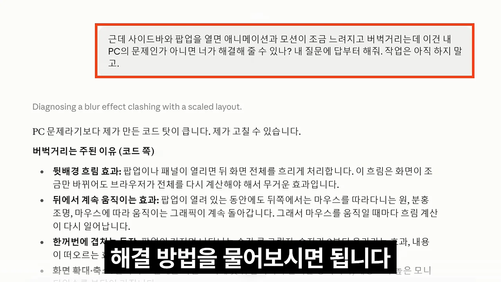
발표자가 정리한 요령은 원하는 걸 잘 전달하고, 생각과 다르게 나오면 무엇이 문제인지 물어보며 고치는 거예요.
ChatGPT와 Claude, 어느 쪽이 나을까요
발표자의 경험으로는 HTML 슬라이드는 ChatGPT가, 모션 그래픽 영상은 Claude가 더 잘 만드는 경우가 많았어요. 아래 화면도 왼쪽 'HTML 슬라이드 최적화', 오른쪽 '모션 그래픽 영상 강점'으로 나눠 보여 줘요. 다만 발표 주제, 쓴 효과, 모델에 따라 다를 수 있다고 덧붙여요. Claude에서 만든 모션 그래픽을 ChatGPT의 HTML 슬라이드에 넣는 식으로 섞어 써도 돼요.
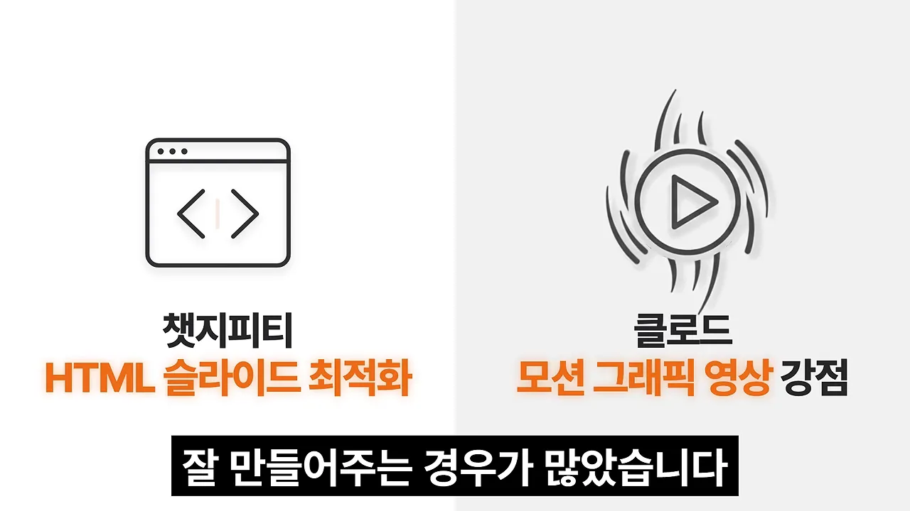
HTML 슬라이드가 늘 답은 아니에요
영상은 주의할 점으로 끝나요. 정부나 공공기관은 PDF나 PPT 형식만 받는 경우가 있고, 회사 문화나 부서장 취향에 따라 PPT가 필요할 수도 있어요. 아래 화면이 그 예로, 정부 및 공공기관에서 'PDF나 PPT 형식 요구'로 화살표가 이어져요.
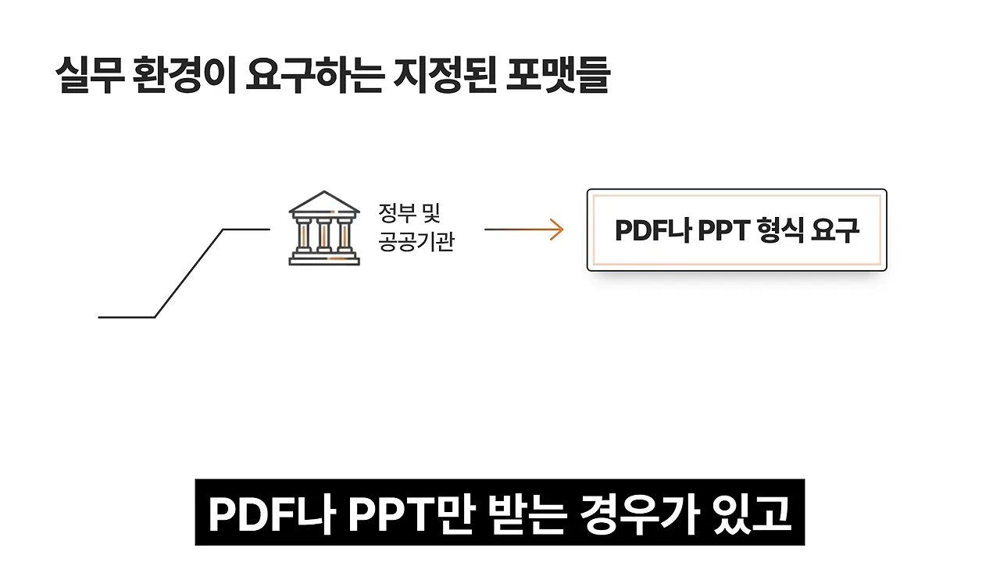
효과와 모션 그래픽도 늘 다 쓸 필요는 없어요. 발표 자료의 본질은 청중이나 고객과의 소통이라서, 상황에 맞게 골라 쓰는 게 중요하다고 해요.
아예 몰라서 못 쓰는 것보다 활용법을 일단 익혀 둔 다음 적재적소에 골라 쓰는 능력이 요즘 같은 AI 시대에 정말 중요하다 생각합니다.
— 영상 14:52